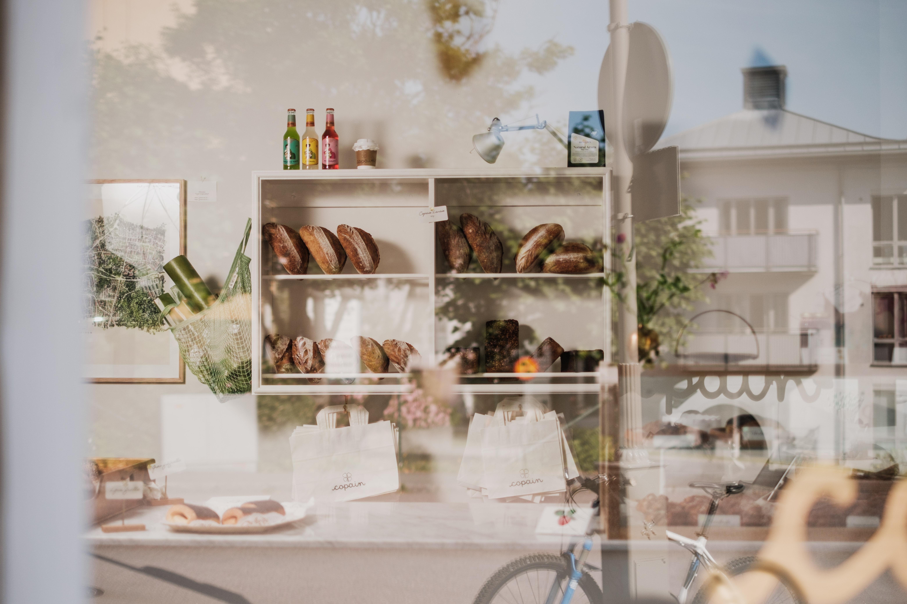
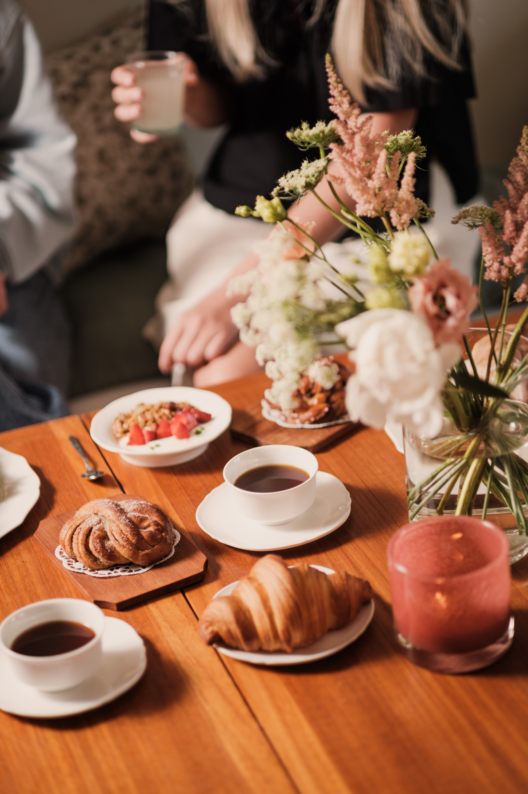
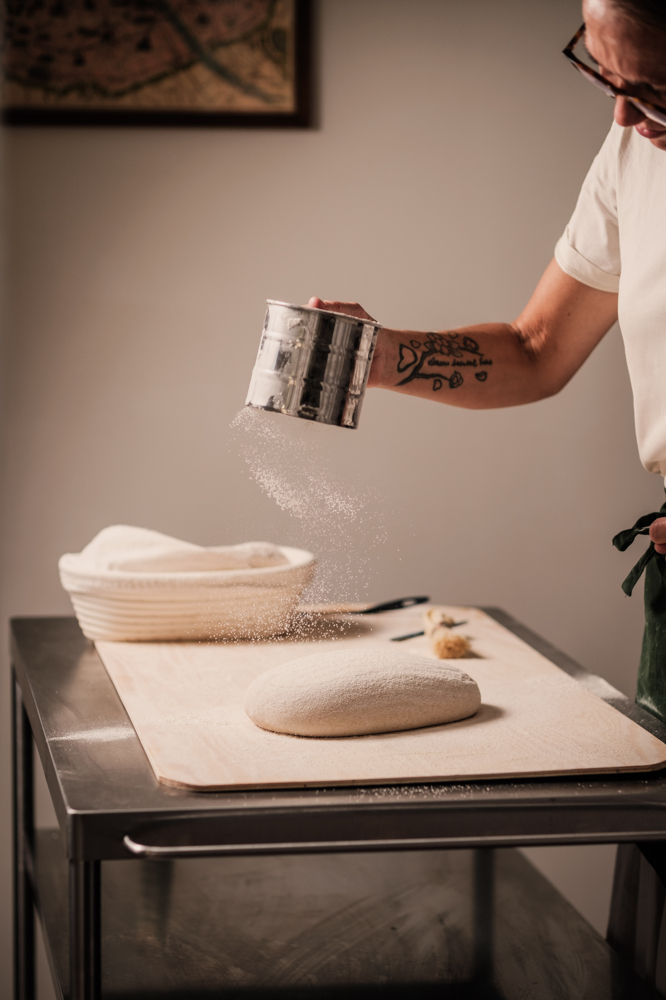

Ett litet hantverksbageri, café och butik i hjärtat av Örgryte.
Vi bakar surdegsbröd, croissanter, tebirkes, bullar och annat gott för hand, med bra råvaror och gott om tid. Hos oss kan du slå dig ner för frukost, lunch eller en fika – eller titta in i butiken där vi samlar sådant vi själva tycker om.
Copain ligger i en gammal bagerilokal på Lillkullegatan, där det bakades bröd redan på 1940-talet. När vi tog över lokalen ville vi låta så mycket som möjligt av det gamla få finnas kvar – slitna ytor, spår av tidigare liv och allt det där som inte går att köpa nytt.
Copain betyder kompis på franska, och ungefär så vill vi att bageriet ska kännas. Ett kvartersbageri där man tittar in efter bröd, tar en kaffe, äter något eller bara säger hej.
Öppettider
Torsdag–lördag 07.30–15.00
Söndag 08.30–15.00
Just nu har vi sommarstängt och öppnar igen torsdagen den 13 augusti ☀️
Följ oss gärna på Instagram och Facebook.

Vi bakar efter dagen och säsongen.
Surdegsbröd och frallor finns i grunden varje öppningsdag, tillsammans med bullar, cookies och annat sött. Därutöver varierar sortimentet – kanske rågbröd, croissanter, tebirkes, focaccia eller något vi råkat bli sugna på att baka just den veckan.
Veckans sortiment publicerar vi på Instagram inför öppningsdagarna.

Lite mer än ett bageri.
I butiken samlar vi sådant som vi själva tycker om – mat, dryck, böcker, inredning och små saker för hemmet. Sortimentet får växa fram efter hand och består gärna av produkter med en tydlig historia, bra material och ett hantverk bakom sig.